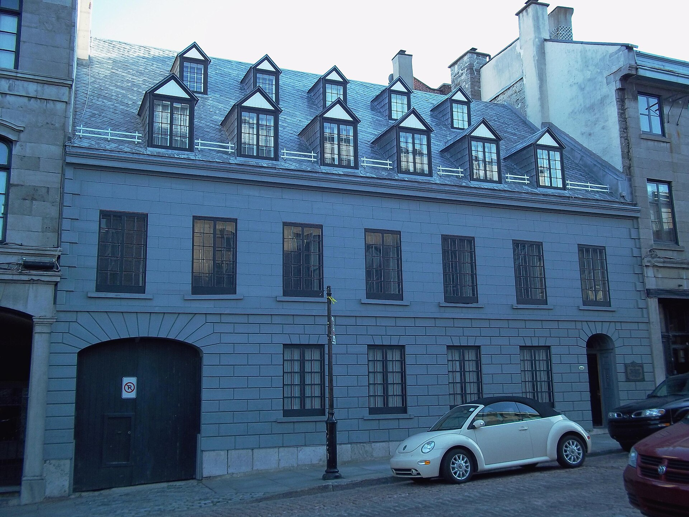

Classical house of the British regime Édifice d’inspiration classique du Régime britannique

Maison Papineau, 440 rue de Bonsecours, Vieux-Montréal — a symmetrically composed street front with quoined angles, a carriage arch and a dormered roof. Photograph by Jeangagnon, 24 July 2011, Wikimedia Commons, CC BY-SA 3.0. https://commons.wikimedia.org/wiki/File:Maison_Papineau_01.jpg — licence, author and file URL read through the Commons API before download; the photograph was opened and checked against its description. Shown as an example of the classical street front the RPCQ describes, not as a building either source attributes to this family by name.
What the British regime built when the walls came down: cut grey limestone, a symmetrical street front, an order recalled rather than reproduced, a pediment, quoined angles. The RPCQ treats it as the most numerous family in the site — « la forte proportion de bâtiments du Régime britannique d'inspiration classique » — and, because a site fiche describes a landscape rather than a house, it describes the family entirely in terms of the façade.
From 1800 Montréal became the principal city of the two Canadas. The political upheavals of the 18th century, the Conquest and American independence among them, drove population growth and immigration, and dynamic import-export merchants replaced the magnates of the fur trade. The RPCQ's account of the change is architectural in one line: « Les maisons en bois des artisans font place aux résidences et édifices en pierre d'inspiration néoclassique. » The fortifications were demolished between 1801 and 1817 and three commissioners were appointed to plan the freed ground; their terrace along the river, enlarged Champ-de-Mars and wider streets are still the frame of the quarter. Grey limestone stayed the predominant material until 1850. The two great fires of 9 and 10 July 1852, which destroyed some 1 200 dwellings and left about 10 000 people homeless, ended wooden construction in the city outright and made stone the rule rather than the preference.
| Tenure / plan | row |
|---|---|
| Storeys | – |
| Roof form | – |
| Roof pitch | – |
| Window proportion | – |
| Principal cladding | cut-stone, montreal-greystone |
| Roofing | – |
| Garage | – |
| Lot width | – |
| Front setback | – |
| Side setback | – |
| Front yard green | – |
What RPCQ id 93528 (MCC); Ville de Montréal says about this type
- « Les nombreux édifices d’inspiration classique du Régime britannique sont caractérisés, entre autres, par la pierre calcaire grise. »
- Built on the public alignment, at high density, party-walled, like everything else inside the old town; the RPCQ lists the setting-back of certain administrative and public buildings as the exception that proves it.
- The Plan des commissaires of 1804 gave the quarter a terrace along the river, an enlarged Champ-de-Mars and wider streets, and the three principal arteries bounding the site — rues de la Commune, Saint-Antoine and McGill — descend from it.
- Not stated. The RPCQ says only that the site's gauges are heterogeneous and very variable, particularly in height.
- Symmetrical composition of the façade.
- The classical orders recalled — Doric, Ionic, Corinthian.
- Pediments and quoined angles.
- Not stated by either source for this family.
- The RPCQ does record, as a characteristic of the site, the relation between lot and street "manifested by steps, carriage doors, railings, rights of way and several entrances — one on each façade giving on the street".
- Cut stone (pierre de taille).
- Grey limestone predominant until 1850, then a wide variety of stone types.
- « La forte proportion de bâtiments du Régime britannique d’inspiration classique se distinguant par l’emploi de la pierre de taille, la composition symétrique des façades, le rappel des ordres classiques (dorique, ionique, corinthien), les frontons et les chaînages d’angle. »
- « L’utilisation de matériaux traditionnels marquée par une prédominance de la pierre calcaire grise jusqu’en 1850, puis par une grande variété de types de pierre. »
- « La relation entre le lot et la rue se manifestant par la présence de marches, de portes cochères, de grilles, de servitudes de passage et de plusieurs entrées, à savoir une sur chaque façade donnant sur la rue. »
Storeys, roof form and pitch, roofing, window proportion, lot width, setbacks and green front yard are null because neither source states them. The RPCQ's sentence on this family is a sentence about façades — stone, symmetry, orders, pediments, quoins — and says nothing about section or roof; the site's massing it describes only as heterogeneous. Tenure plan is given as row because the RPCQ's characteristic elements record party-wall construction and alignment on the street as general to the site, not because either source classes this family by plan. This is a reconstruction from a site fiche, not a type record from a typology document.
Same word elsewhere
- Stone house of the French tradition (Baie-D'Urfé)
- Rural house of French inspiration (Charlesbourg (Trait-Carré))
- Québec house of neoclassical inspiration (Charlesbourg (Trait-Carré))
- Mansard house (Charlesbourg (Trait-Carré))
- Industrial vernacular house (Charlesbourg (Trait-Carré))
- Mansard-roofed house with gable wall on the façade (maison à toit mansardé avec mur pignon en façade) (Gatineau)
- Wood matchstick house of two to two and a half storeys (maison allumette en bois de deux à deux étages et demi) (Gatineau)
- L-plan house with a two-slope (gable) roof (maison avec plan en L à toit à deux versants) (Gatineau)
- English-revival stone house (Hampstead)
- Postwar detached house (Hampstead)
- House of French inspiration (Île d'Orléans)
- Traditional Québec house of neoclassical influence (Île d'Orléans)
- Second Empire style and the mansard house (Île d'Orléans)
- Boomtown house (Île d'Orléans)
- Stone house of the French tradition (Lachine (borough of Montréal))
- Bourgeois brick house in the Victorian taste (Lachine (borough of Montréal))
- The maison « Gameroff » — contractor-built house of the 1950s–1970s quarters (Lachine (borough of Montréal))
- Franco-Québécois transitional house (Lévis)
- Québécois traditional house (Lévis)
- Neoclassical house (Lévis)
- Second Empire house (Lévis)
- Victorian house (Lévis)
- American vernacular house (Lévis)
- Beaux-Arts house (Lévis)
- Boomtown house (Lévis)
- Flat-roofed house (Lévis)
- Village house of Longue-Pointe (Mercier–Hochelaga-Maisonneuve (borough of Montréal))
- Company workers' house of the Hudon mill, rue Saint-Germain (Mercier–Hochelaga-Maisonneuve (borough of Montréal))
- Veterans' house, to the Wartime Housing Limited model (Mercier–Hochelaga-Maisonneuve (borough of Montréal))
- Garden City House (Town of Mount Royal)
- Faubourg House (Town of Mount Royal)
- Canadian House (Town of Mount Royal)
- New England House (Town of Mount Royal)
- Georgian House (Town of Mount Royal)
- English Manor House (Town of Mount Royal)
- Prairie House (Town of Mount Royal)
- Semi-detached single-family house (Outremont (borough of Montréal))
- Detached single-family house (Outremont (borough of Montréal))
- Faubourg house (Le Plateau-Mont-Royal (borough of Montréal))
- Detached urban house (Le Plateau-Mont-Royal (borough of Montréal))
- Row urban house (Le Plateau-Mont-Royal (borough of Montréal))
- Apartment block without courtyard (Le Plateau-Mont-Royal (borough of Montréal))
- Stone house of the French tradition (Pointe-Claire)
- Traditional Québec house of the village core (Pointe-Claire)
- One-storey rural house of French inspiration (Québec City)
- Urban stone house of French inspiration (Québec City)
- Franco-Québécois transition house (Québec City)
- London-type terrace house (Québec City)
- Québécois neoclassical house (Québec City)
- Mansard-roofed house (Québec City)
- Rudimentary faubourg house (Québec City)
- Flat-roofed faubourg house (Québec City)
- Neo-Queen Anne house (Québec City)
- Neo-Tudor house (Québec City)
- Arts and Crafts house (Québec City)
- Dutch Colonial Revival house (Québec City)
- Neo-Georgian house (Québec City)
- Detached house of the Cité-Jardin du Tricentenaire (Rosemont–La Petite-Patrie (borough of Montréal))
- Traditional French and Québécois house (Saint-Lambert)
- Mansard-roofed house of Second Empire influence (Saint-Lambert)
- Queen Anne style house (Saint-Lambert)
- Boomtown house with false mansard (Saint-Lambert)
- Boomtown house with crown (parapet or cornice) (Saint-Lambert)
- Cubic (Four Square) house (Saint-Lambert)
- House of Arts and Crafts influence (Saint-Lambert)
- Two-storey clapboard village house of the îlot villageois (Sainte-Anne-de-Bellevue)
- Traditional Québec house of the village core (Sainte-Anne-de-Bellevue)
- Garden City Press workers' house (Sainte-Anne-de-Bellevue)
- Village house (Le Sud-Ouest (Montréal))
- Boomtown house (Le Sud-Ouest (Montréal))
- Urban house (Le Sud-Ouest (Montréal))
- Apartment house (Le Sud-Ouest (Montréal))
- Veterans' house (Le Sud-Ouest (Montréal))
- Stone house in the French tradition (Vieux-Terrebonne)
- Neoclassical Québécois stone house (Vieux-Terrebonne)
- Small-gabarit vernacular village house of the Bas-de-la-Côte (Vieux-Terrebonne)
- French-regime house in stone (colonial français) (Trois-Rivières)
- Well-to-do bourgeois house in stone and brick (maison cossue) (Trois-Rivières)
- Boomtown house (Trois-Rivières)
- Arts & Crafts house (Trois-Rivières)
- French-regime stone house (Ville-Marie (Montréal))
- Workers' house with carriage gate (Ville-Marie (Montréal))
- Rural or village house (Villeray–Saint-Michel–Parc-Extension)
- Boomtown house (Villeray–Saint-Michel–Parc-Extension)
- Post-war house (Villeray–Saint-Michel–Parc-Extension)
- Post-war semi-detached house (Villeray–Saint-Michel–Parc-Extension)
- Picturesque villa and country house (Westmount)
- Greystone row house (Westmount)
- Mansard-roofed house of Second Empire influence (Westmount)
- Queen Anne house (Westmount)
- Richardsonian Romanesque house (Westmount)
- Semi-detached brick house (Westmount)
- Eclectic prestige house of the summit (Westmount)
- Tudor Revival house (Westmount)
- Arts and Crafts semi-detached house (Westmount)
- Interwar apartment house (Westmount)
Same form elsewhere
- Bourgeois brick house in the Victorian taste (Lachine (borough of Montréal))
- Bourgeois residence of the cité, Beaux-Arts (Mercier–Hochelaga-Maisonneuve (borough of Montréal))
- Maison cossue of rue Saint-Louis (Vieux-Terrebonne)
- Well-to-do bourgeois house in stone and brick (maison cossue) (Trois-Rivières)
Same period elsewhere
- Stone house of the French tradition (Baie-D'Urfé)
- Rural house of French inspiration (Charlesbourg (Trait-Carré))
- Québec house of neoclassical inspiration (Charlesbourg (Trait-Carré))
- Central-gable house (maison à pignon central) (Gatineau)
- Mansard-roofed house with gable wall on the façade (maison à toit mansardé avec mur pignon en façade) (Gatineau)
- One-and-a-half-storey wooden matchstick house (maison allumette en bois d'un étage et demi) (Gatineau)
- Wood matchstick house of two to two and a half storeys (maison allumette en bois de deux à deux étages et demi) (Gatineau)
- L-plan house with a two-slope (gable) roof (maison avec plan en L à toit à deux versants) (Gatineau)
- House of French inspiration (Île d'Orléans)
- Traditional Québec house of neoclassical influence (Île d'Orléans)
- Regency cottage (Île d'Orléans)
- Second Empire style and the mansard house (Île d'Orléans)
- Victorian eclecticism (Île d'Orléans)
- Stone house of the French tradition (Lachine (borough of Montréal))
- French-regime house (Régime français) (Lévis)
- Franco-Québécois transitional house (Lévis)
- Québécois traditional house (Lévis)
- Regency cottage (Lévis)
- Neo-Gothic (Lévis)
- Neoclassical house (Lévis)
- Agricultural vernacular building (Lévis)
- Village house of Longue-Pointe (Mercier–Hochelaga-Maisonneuve (borough of Montréal))
- Company workers' house of the Hudon mill, rue Saint-Germain (Mercier–Hochelaga-Maisonneuve (borough of Montréal))
- Faubourg house (Le Plateau-Mont-Royal (borough of Montréal))
- Detached urban house (Le Plateau-Mont-Royal (borough of Montréal))
- Stone house of the French tradition (Pointe-Claire)
- Traditional Québec house of the village core (Pointe-Claire)
- One-storey rural house of French inspiration (Québec City)
- Urban stone house of French inspiration (Québec City)
- Franco-Québécois transition house (Québec City)
- London-type terrace house (Québec City)
- Palladian house (residential Palladian) (Québec City)
- Neo-Gothic house, villa or cottage (Québec City)
- Québécois neoclassical house (Québec City)
- Regency cottage (Québec City)
- Regency villa (Québec City)
- Mansard-roofed house (Québec City)
- Rudimentary faubourg house (Québec City)
- Traditional French and Québécois house (Saint-Lambert)
- Traditional Québec house of the village core (Sainte-Anne-de-Bellevue)
- Village house (Le Sud-Ouest (Montréal))
- Stone house in the French tradition (Vieux-Terrebonne)
- Maison cossue of rue Saint-Louis (Vieux-Terrebonne)
- Neoclassical Québécois stone house (Vieux-Terrebonne)
- Small-gabarit vernacular village house of the Bas-de-la-Côte (Vieux-Terrebonne)
- French-regime house in stone (colonial français) (Trois-Rivières)
- Rural or village house (Villeray–Saint-Michel–Parc-Extension)
- Picturesque villa and country house (Westmount)
Same style elsewhere
- Québec house of neoclassical inspiration (Charlesbourg (Trait-Carré))
- Central-gable house (maison à pignon central) (Gatineau)
- Traditional Québec house of neoclassical influence (Île d'Orléans)
- Franco-Québécois transitional house (Lévis)
- Québécois traditional house (Lévis)
- Neoclassical house (Lévis)
- Village house of Longue-Pointe (Mercier–Hochelaga-Maisonneuve (borough of Montréal))
- Traditional Québec house of the village core (Pointe-Claire)
- Franco-Québécois transition house (Québec City)
- London-type terrace house (Québec City)
- Palladian house (residential Palladian) (Québec City)
- Québécois neoclassical house (Québec City)
- Rudimentary faubourg house (Québec City)
- Traditional French and Québécois house (Saint-Lambert)
- Traditional Québec house of the village core (Sainte-Anne-de-Bellevue)
- Neoclassical Québécois stone house (Vieux-Terrebonne)
- Well-to-do bourgeois house in stone and brick (maison cossue) (Trois-Rivières)